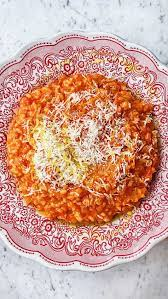

Carolina Gelen's Tomato Risotto

Description
kinda like a pizza, but in a porridge form. It’s comforting, satisfying and super delish.
Ingredients
- 1 onion, chopped
- 2-5 garlic cloves, minced
- 1 cup starchy, short grain rice, like Arborio
- A splash of white wine or water or vegetable stock
- 400 grams or 6-8 whole canned tomatoes, preferably San Marzano
- A bunch of basil
- 4-6 cups hot vegetable stock
- Salt, pepper, chile flakes
- Butter
- Cheese
- Olive oil
Steps
- Drizzle some oil in a pan on medium heat. Sizzle the onion for 2-4 minutes until translucent. Add in the garlic and keep cooking that for 1-3 mins. Add in the rice (not washed) and sauté for a few more minutes. Add a splash of wine, water, or stock to the pan.
- Start crushing 2 tomatoes at a time over the rice. Constantly the rice over medium heat until most tomato juices have been absorbed. Repeat this step until you’ve incorporated the entire can of tomatoes in.
- Drop a bunch of fresh or dried basil and a big pinch of salt in the pan. Add a ladle of stock to the rice and keep stirring over medium heat until most liquid has been absorbed by the rice. Keep adding the stock, ladle by ladle and repeat this process until the risotto is cooked. You’ll have to taste it from time to time to check on it. Feel free to take out the basil at the end. Season to taste.
- Once cooked and creamy, drop a knob of butter in, a handful of parm cheese and stir it in. Serve with more cheese and olive oil on top.